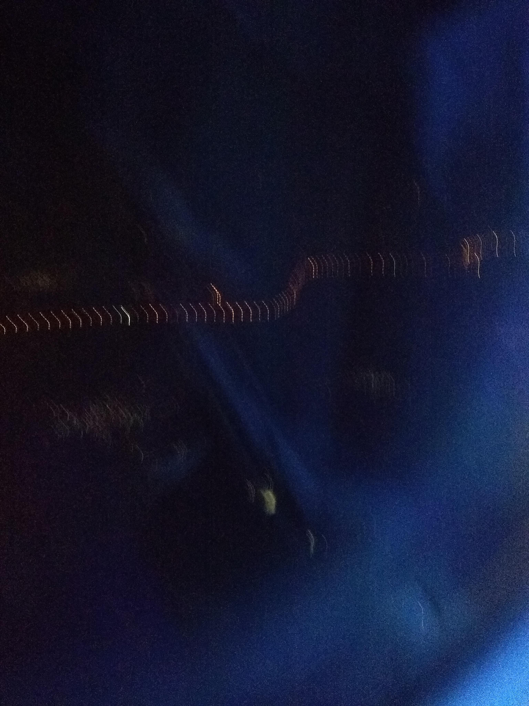

Introduction
In the beginning of 2018, few weeks after the winter holidays had passed. My supervisor asked if i would be interested in going to Singapore to help support the Quality Control Lab their during start up of new product manufacturing. I agreed without hesitation knowing not only would this be an excellent professional opportunity for me but this could also end up being a semi vacation as well. I would be going for two weeks and could take a trip else where as well. The company would cover my both my outbound flight to Singapour and inbound tickets from anywhere, I would just need to buy my own ticket to what ever destination I wanted. I ended up taking an excursion to go visit family in Pakistan as well as go sightseeing.
Flying Business Class


Since this was a work trip, I was abel to fly business class. I have flown overseas may times but this would be the my first experiance flying business class. The pictures about were taken by me of the business class cabin. I flew via Qatar Airways and they recently had started converting many of their business class seating arraigements over to Q-Suites. These were basicly suites with a closing door. The seats fully reclined into a bed. This was the best experiance I have every had while flying. My flight to Doha was about 13 hours. Then from Doha to Singapore was about 8 hours. Flying business class made these travel times literally fly by!
Business Class Lounge


For the time while flying I also go access to the business class lounge at Hammad International Airport in Doha. This was such a nice experiance. It was a great place to able to relax and unwind. My layover was about 5 hours so having access to the lounge got me refreshed for the next flight. The above photos are from the airport and the lounge that i had taken.
Flying Above Doda, Qatar


When flying into and out of Doda. I got a glimps of the city. I did not travel outside of teh airport as i did not have that much time to actully see the city. I took the above shots from my window.
Singapore


Traveling around Singapore was increadibly easy. Asides from taking the cab to the manifactuirng facility. I walked and utilized the rail system to travel about the city. I stayed in the Holiday Inn Express near Clarke Quay and had acces to may rail lines within 5 to 10 minutes. The photos above were taken around the city. Singapore is a city State and I was amaized at how much there was to do there. This has been my one and only time going to Singapore but I have told my self that If I can ever have the opertunity to go on my own I will try to go.
Side Trip To Pakistan
- 


Pakistan is the only place I have ever traveled to via airplane prior to going to Singapore. When my supervisor asked me about going to Singapore for the start up project, he also asked if I wanted to see about going to visit Pakistan as well. The company would buy my outbound and inbound flights from the US. I just had to purchase my was from Singapore to Paksitan. After searching online I was able to find a flight for less than $300.00. So I used this opertunity to take a vacation after finishing the project and in the process was abel to travel Business when returning back to the US. I spent 2 weeks in Singapore and 1 week in Pakistan. This was such an amazing experiance, one that I have been hoping for to return but has not happend yet. Hopfully I will get another oportuninty to travel to Singapore or another one of our manufacturing facilities overseas for a project and get a chance to take another excursion trip after finishing the project.
Back to top of Page